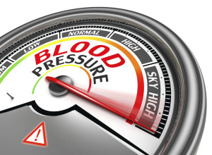

In most cases, it's impossible to pinpoint an exact cause of high blood pressure. There are, however, a number of factors that have been linked to high blood pressure including:
Forgetting to take your blood pressure medication
Stroke
Heart attack
Heart failure
Kidney failure
Rupture of your body's main artery (aorta)
Interaction between medications
Convulsions during pregnancy (eclampsia)
A family history of high blood pressure:
Age - The incidence of high blood pressure rises in men after age 35 and in women after age 45.
Gender - Men are more likely to have high blood pressure than women.
Smoking - If you smoke cigarettes, you may have increased high blood pressure.
Race - Approximately 33% of African-Americans have high blood pressure, compared to 25% of Caucasians